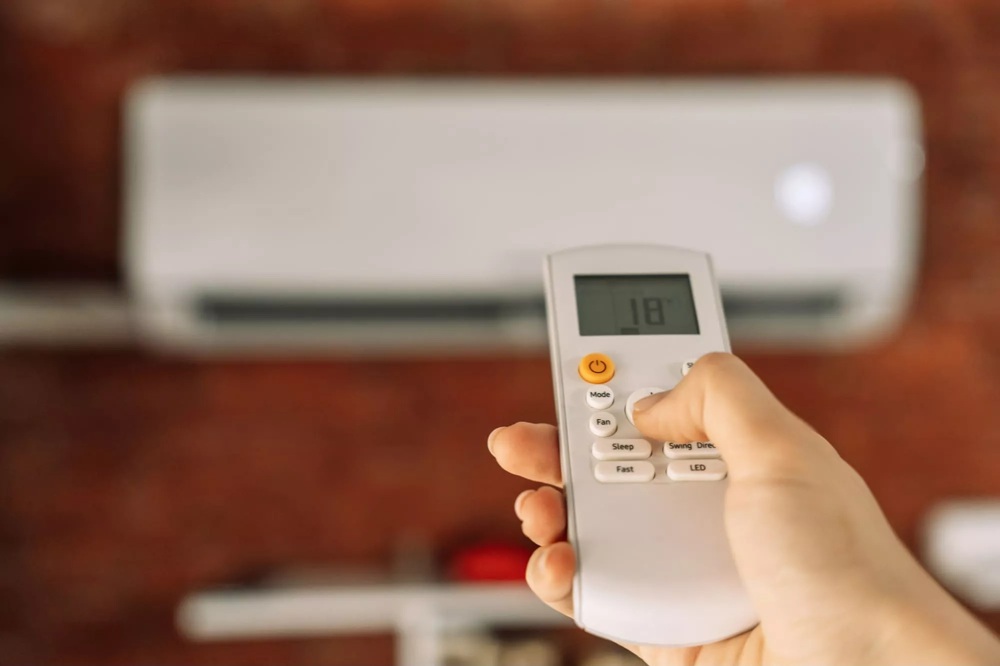

Precisa de Higienização de Ar-Condicionado em Palhoça?
Na região metropolitana, buscar higienização de ar-condicionado em Palhoça com agilidade ajuda a voltar ao normal sem perder produtividade em casa ou no trabalho. Serviços bem executados também reduzem improviso e melhoram a sensação de conforto no ambiente.
Nossa atuação em Palhoça prioriza diagnóstico claro, execução organizada e comunicação direta. Assim você entende o que será feito, o que está incluso no escopo e quais cuidados são necessários no seu tipo de imóvel. O serviço de higienização de ar-condicionado em Palhoça é pensado para quem busca resultado técnico com orientação clara, execução organizada e menos improviso no dia a dia.
Calculadora de BTUs Calculadora de consumo
A higienização de ar-condicionado reforça a qualidade do ar interno (IAQ), atuando em odor, biofilme e resíduos que escapam à limpeza superficial da evaporadora. Em Palhoça, em Florianópolis (SC), o serviço costuma ser buscado em apartamentos, consultórios, escritórios e comércio — ambientes onde HVAC e conforto térmico impactam diretamente a rotina na Ilha de Santa Catarina.

1. O que é o serviço de higienização de ar-condicionado em Palhoça?
A higienização é um serviço mais profundo, voltado a reduzir biofilme, odores e contaminantes em componentes internos, com foco em qualidade do ar e conforto.
Esse atendimento costuma ser necessário em situações como:
- cheiro forte ao ligar o aparelho;
- alergias ou sensibilidade a poeira em ambientes fechados;
- aparelho em locais úmidos ou pouco ventilados;
- após reformas com muita poeira;
- rotina de higiene para clínicas, consultórios e salas comerciais;
- preparação para alta temporada de uso.
Na Grande Florianópolis (SC), isso é relevante porque cada cidade tem perfis diferentes de imóveis e uso — e, em Palhoça, a demanda por climatização costuma ser constante ao longo do ano.
2. Como funciona o serviço?
O atendimento é organizado para reduzir dúvidas e evitar retrabalho.
- Diagnóstico rápido: Entendemos o tipo de odor/sintoma e o modelo do equipamento.
- Preparação: Protegemos móveis e realizamos isolamento do ponto de serviço.
- Higienização técnica: Aplicamos procedimento compatível com o tipo de evaporadora e estado do sistema.
- Teste e orientação: Validamos funcionamento e indicamos periodicidade.
3. Por que fazer higienização em Palhoça?
Odores persistentes, sensação de ar “pesado” e ambientes sensíveis pedem um tratamento mais profundo que a limpeza comum. A higienização atua em causas comuns de mau cheiro e biofilme.
- Melhora a percepção de ar mais limpo em ambientes sensíveis.
- Reduz odores que limpeza superficial não resolve.
- Ajuda a manter boa convivência em apartamentos e salas pequenas.
- Complementa a manutenção técnica em imóveis em Palhoça.
Em Palhoça e na rotina da região metropolitana, agir com técnica e rapidez costuma fazer diferença na experiência de uso e na previsibilidade do ambiente.
4. Quanto custa higienização de ar-condicionado em Palhoça? (Valores atualizados para 2026)
Valores para limpeza e higienização da evaporadora + condensadora (sem desinstalação):
- Até 12.000 BTU/h: R$ 250,00.
- De 18.000 a 30.000 BTU/h: R$ 300,00.
- De 32.000 a 48.000 BTU/h: R$ 350,00.
- Piso teto ou K7: R$ 600,00.
Esses valores consideram limpeza e higienização da evaporadora e condensadora sem necessidade de desinstalação.
5. Onde contratar higienização de ar-condicionado em Palhoça?
Ao procurar atendimento técnico em Palhoça, o ideal é escolher uma equipe que explique o processo, combine escopo e execute com segurança.
Oferecemos:
- procedimento técnico com foco em segurança e organização;
- explicação do que será feito e o que não está incluso;
- atendimento para residências e empresas em Palhoça;
- agenda com horários combinados para reduzir transtorno.
Também atendemos Florianópolis e cidades vizinhas — a secção Outros serviços nesta página reúne os demais tipos de serviço na mesma cidade.
6. Vantagens de contratar um serviço profissional
Contratar um serviço técnico bem conduzido reduz improviso e melhora o resultado final.
- Mais bem-estar em ambientes com crianças, idosos ou alérgicos.
- Reduz incômodo de odores em visitas e reuniões.
- Melhora a sensação geral do ar condicionado.
- Processo conduzido por equipe com foco técnico.
Nos imóveis e comércios em Palhoça, isso é importante porque o ambiente exige cuidado com acabamento, dreno, elétrica e acesso — pontos que influenciam diretamente na qualidade do serviço.
7. Onde atendemos com higienização de ar-condicionado em Palhoça?
Principais perfis de atendimento: ruas residenciais, avenidas de circulação local, comércio de bairro, condomínios e conjuntos comerciais.
Áreas atendidas: Atendemos imóveis e empresas em Palhoça em Florianópolis, com deslocamento planejado para regiões vizinhas quando necessário.
Além de Palhoça, a demanda por climatização costuma aparecer com força em São José e Biguaçu na Grande Florianópolis (SC), o que ajuda no planejamento de deslocamento e na organização da agenda técnica.
Nosso atendimento busca cobrir a cidade e entornos próximos na Grande Florianópolis, com foco em deslocamento planejado e comunicação clara sobre prazos.
8. Perguntas frequentes
Sim. Atendemos em Palhoça com serviço técnico e agenda conforme disponibilidade.
Priorizamos triagem ágil e deslocamento organizado para reduzir o tempo de espera.
Sim. Atendemos perfis residenciais e comerciais, respeitando regras de condomínio quando necessário.
Você pode chamar no WhatsApp, ligar ou preencher o formulário de contato com dados do aparelho e do endereço.
As formas de pagamento são combinadas no orçamento, conforme tipo de serviço e empresa emissora.
Quando há disponibilidade na agenda, combinamos horário especial no contato.
Não. A higienização é mais profunda e voltada a odor/contaminação; a limpeza é mais pontual em filtros e sujeira comum.
Quando aplicável, orientamos tempo de espera após o procedimento.
Precisa de higienização de ar-condicionado em Palhoça?
Fale agora com a equipe e receba orientação técnica.
Outros serviços em Palhoça
Na mesma região também realizamos os serviços abaixo.